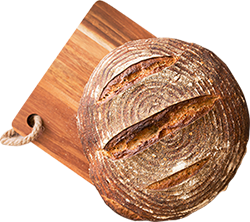

Fresh from the Oven
Breads
 Our breads are made daily from highest-quality whole grain flour, water, salt, and yeast or sourdough starter. Simply and naturally, and never any preservatives. Patience is key to achieving the proper level of fermentation and baking each loaf to perfection. Available in whole grain, sourdough, olive loaf, classic rye, and potato-onion.
Learn more about our baking process...
Muffins
 Every day, we offer a large selection of muffins, including blueberry, multi-berry, bran, corn, lemon-poppyseed, and chocolate. Our muffins are made from scratch each day. Stop by to see our seasonal muffin flavors!
Every day, we offer a large selection of muffins, including blueberry, multi-berry, bran, corn, lemon-poppyseed, and chocolate. Our muffins are made from scratch each day. Stop by to see our seasonal muffin flavors!